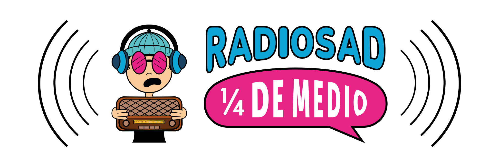
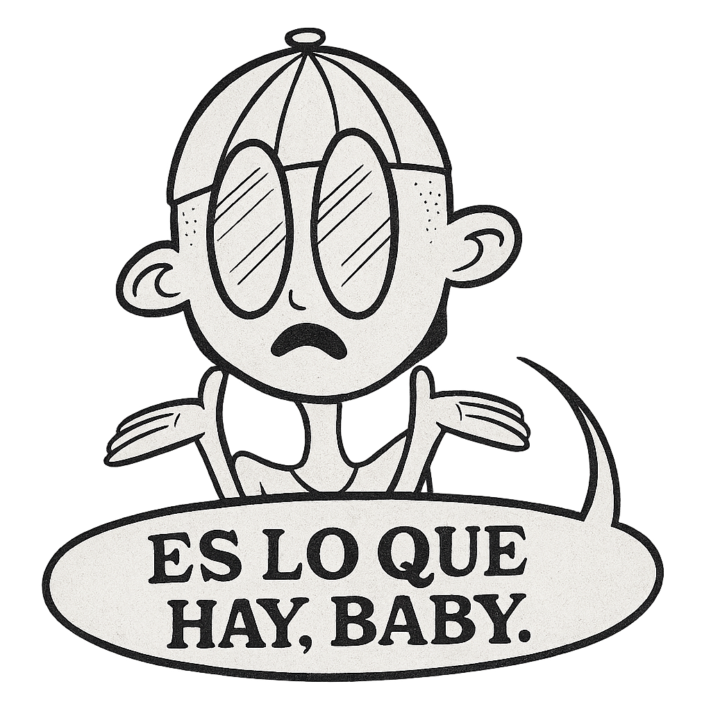
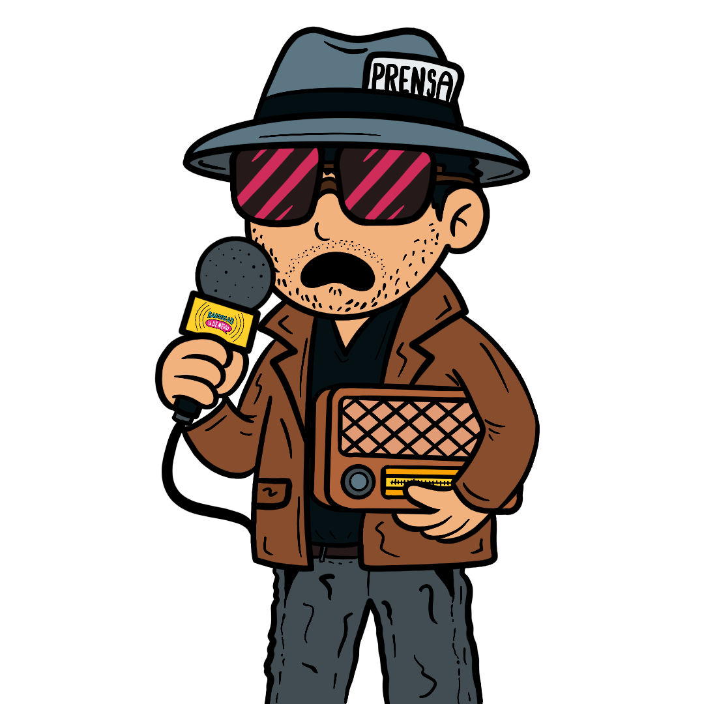

¼ DE MANIFIESTO
No es malo ni bueno. Solo está confundido. Respira por nosotros porque olvidamos cómo hacerlo.
Sabemos que el algoritmo no duerme. Tú sí, y debes procurar hacerlo bien. Pero de lo que no eres consciente es que, mientras descansas, ese desgraciado algoritmo pretende decidir qué te importa hoy, qué canción viral debes escuchar hasta el cansancio, qué meme recuerdas, qué cosa olvidas sin darte cuenta.
En ese punto es donde todo se ve igual: el baile viral, la receta exprés, el consejo motivacional que contradice al del video anterior. Un feed que te conoce menos de lo que dice.
El dizque contenido de valor™
Promete salvarte en 30 segundos, enseñarte, entretenerte y convertirte en alguien nuevo antes de que termine
el scroll. Pero nada que dure 30 segundos va a cambiarte la vida. Solo tomarte el tiempo (largo tiempo) de
apreciar algo y realmente interesarte por ello lo hará.
Ahí nació Radiosad. En un acto de fe entre dos mundos. Entre la superficialidad del ahora y la nostalgia de lo que fuimos; es decir, la hiperconectividad vs. la radio, el beat del perreo intenso vs. el math rock o las canciones compuestas en estado ácido, los memes de poker face vs. los videos del último concierto de La Tigresa del Oriente.
Demasiado lento para el feed.
Demasiado sensible para el algoritmo.
Demasiado honesto para ser viral.
Aquí estamos los que decidimos resistir. No para huir, sino para abrir una grieta. Romper el mecanismo desde adentro. Una hendidura por donde entre aire, ruido humano, música rara y cosas que no tienen KPI.
